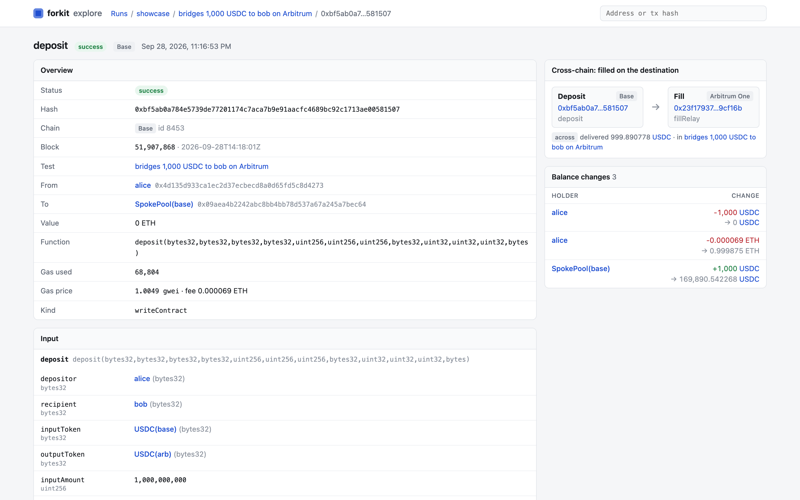
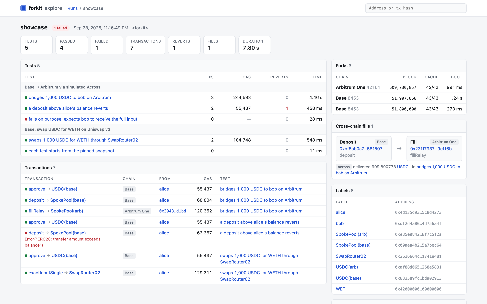
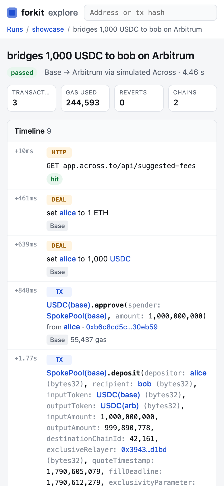

A Condensate project
Foundry-style fork tests in TypeScript.
Foundry gives Solidity devs createSelectFork, deal, prank, warp, snapshot and expectRevert. forkit gives TypeScript devs the same things against real forked chains, inside the test runner they already use. Your production code (routing, quoting, SDK calls, bundlers, bridges) runs against real mainnet state, and you assert on what actually landed.
- vitest
- bun:test
- jest
- node:test
Install
$ bun add -d @condensate/forkit viem # or npm / pnpm / yarn
$ curl -L https://foundry.paradigm.xyz | bash && foundryup # anvil 1.7.1+Not on npm yet: until it is, depend on packages/forkit from a checkout of the repo.
Quickstart
One describeFork boots an anvil that forks Base at a pinned block. Every itFork starts from the same snapshot and is reverted afterwards.
f.dealsets an exact ERC-20 balance and reads it back.f.prankimpersonates any address. No private key.f.expectBalanceChangefails unless the balance moved by exactly that much.- Record once, replay offline: CI needs no RPC and no key.
import { erc20Abi, parseEther, parseUnits } from "viem";
import { base } from "viem/chains";
import { describeFork, itFork } from "@condensate/forkit/vitest";
const USDC = "0x833589fCD6eDb6E08f4c7C32D4f71b54bdA02913"; // USDC on Base
const alice = "0x778dd60929c5b6f928aeab807fec6986f6ea3d82";
const bob = "0x4a3bcc777d2982e91fc24c678af32f7119c48883";
describeFork("USDC on Base", { chain: base, blockNumber: 51_800_000n }, (f) => {
itFork("alice pays bob", async () => {
await f.deal(USDC, alice, parseUnits("1000", 6));
await f.dealNative(alice, parseEther("1")); // for gas
await f.expectBalanceChange(USDC, bob, parseUnits("250", 6), () =>
f.prank(alice, (c) =>
c.writeContract({ address: USDC, abi: erc20Abi, functionName: "transfer", args: [bob, parseUnits("250", 6)] }),
),
);
});
});Foundry → forkit
The cheatcodes you already know, against a real anvil over JSON-RPC. Every write is a real transaction.
| Foundry | forkit |
|---|---|
vm.createSelectFork(url, block) | fork({ chain, forkUrl, blockNumber }), or describeFork(name, target, body) |
vm.createFork + vm.selectFork | fork([base, arbitrum]) + f.on(chain) |
deal(token, who, amount) | f.deal(token, who, amount) |
vm.deal(who, amount) | f.dealNative(who, amount) |
vm.startPrank(who) … stopPrank() | f.prank(who, async (c) => { … }) |
skip(seconds) / vm.roll | f.warp(seconds) / f.roll(blocks) |
vm.snapshotState() / revertToState(id) | f.snapshot() / f.revertTo(id) |
vm.expectRevert("reason") | expectRevert(promise, "reason") |
vm.expectEmit | expectEmit(receipt, eventAbi, args) |
vm.label(addr, "name") | f.label(addr, "name") |
-vvv traces on failure | on by default: a decoded, Foundry-style trace on every reverted write |
forge snapshot / --check | f.gasSnapshot("label", tx), checked in CI |
Readable output, in any runner
Boot lines, per-test transactions and gas, signed balance changes per labelled address, bridge fills, decoded traces on failure and a gas snapshot diff. Honours NO_COLOR; plain text in CI.
forkit · test/e2e/base-arbitrum-across.vitest.ts
⛓ Arbitrum One (42161) · block 509,730,857 · arb1.arbitrum.io · cache hit (43 reads) · booted in 192 ms
⛓ Base (8453) · block 51,907,866 · mainnet.base.org · cache hit (42 reads) · booted in 213 ms
✓ Base USDC → Arbitrum via simulated Across: recipient paid, fee accounting matches the quote 3 txs · 244,593 gas · 647 ms
balance change USDC(base) (Base) USDC(arb) (Arbitrum One) ETH (Base) ETH (Arbitrum One)
alice -1,000 -0.0001248…
SpokePool(base) +1,000
across relayer -999.890778 -0.0001224…
bob +999.890778
⇄ across deposit 8453:0xbf5a…1507:1 · Base → Arbitrum One · fill 0x23f1…f16b · fee 0.109222 USDC(arb) · settled 999.890778 USDC(arb)After the run: forkit explore
Run with FORKIT_RECORD=1 and every test's transactions, decoded calls, call trees, events and balance moves are saved. forkit explore serves them as a local block explorer for your test run: offline, read-only, bundled in the package.



Cross-chain, without a live relayer
Fork Base and Arbitrum side by side. alice deposits into Base's real Across SpokePool; forkit's simulated relayer fills it through Arbitrum's real SpokePool, and you assert on what bob received.
- Simulators for Across and Relay, plus
bridge.custom. - Quote APIs recorded and replayed, pinned to the fork block.
- An ERC-4337 bundler (alto) on the fork:
@condensate/forkit/4337.
describeFork("Across: Base USDC → Arbitrum", [
{ chain: base, blockNumber: BASE_BLOCK },
{ chain: arbitrum, blockNumber: ARB_BLOCK },
], (f) => {
const arb = f.on(arbitrum);
itFork("bob receives the output on Arbitrum", async () => {
const relayer = bridge.across(f); // watches Base from here on
await fundAlice();
await f.expectBalanceChange(USDC_BASE, alice, -INPUT, deposit);
// Fill every pending deposit on its destination fork.
const [fill] = await arb.expectBalanceChange(USDC_ARB, bob, OUTPUT, () =>
relayer.settle(),
);
expect(fill?.details).toMatchObject({ fee: across.fee(INPUT, FEE) });
});
});